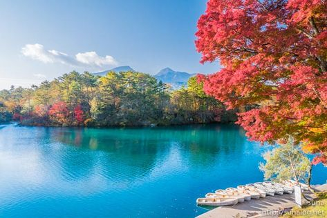

Goshikinuma Ponds
Mysterious lake "Goshikinuma"
Goshikinuma Ponds has a 1-Star rating in the Michelin Green Guide of 2016.
The Goshikinuma Pond group is a generic term for numerous lakes and ponds which include Bishamonnuma, Akanuma, Midoronuma, Tatsunuma, Bentennuma, Rurinuma, Aonuma and Yanaginuma.
It is said that the “mysterious lake” is a mysterious place where the colours of emerald green, cobalt blue, turquoise blue, emerald blue, and pastel blue differ depending on the swamp. Aonuma in particular has such a beautiful colour that it cannot be thought of as something created by nature.
The name, Goshikinuma, as written in Japanese (五色沼 or five colour ponds), is rather a misnomer. The area consists of many more than five ponds, and is also famous for displaying a much larger spectrum of spectacular colours. Factors such weather, season, angle of view, volcanic substances contained in the water, etc can affect the colours that you see. For this reason, we recommend that you visit again at different times of the year.
You can enjoy rowboats in the biggest pond, Bishamonnuma.
Birds are best observed after the winter thaw but before new sprouting, as well as after the falling of the leaves.
In spring after the snow melts, the colours of the lakes are particularly beautiful.